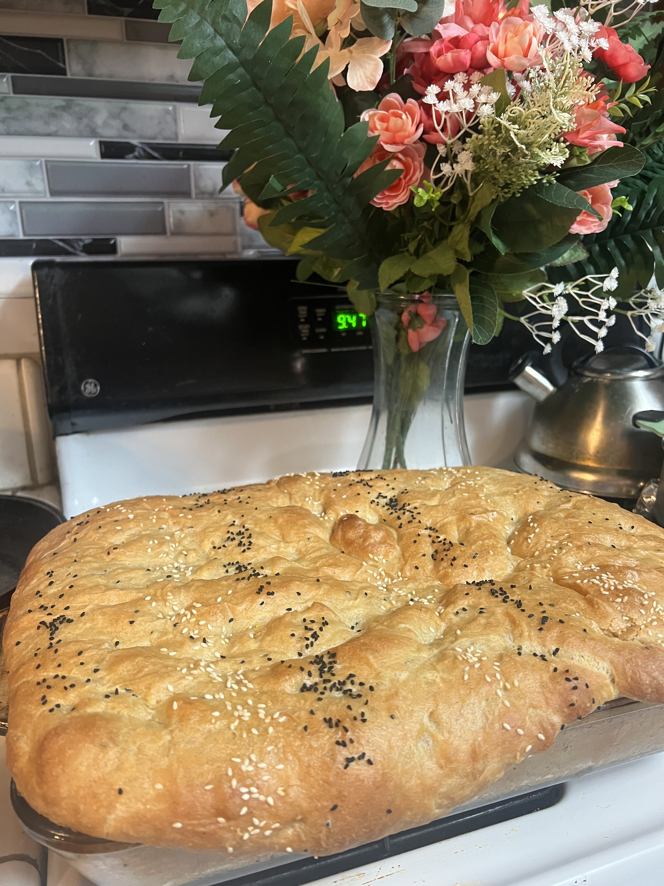

Baking

Baking:
Artesian French Breads, Garlic Breads,
Milk Breads, seeded whole wheat/grain Breads,
Raisins Breads,
Easy rolls and Chocolate Breads.
Gardening

Gardening:
Creating visually appealing and functional and safe outdoor spaces
Planting flowers, vegetables and fruits,
Maintaining gardens,Monitoring plant health and treating pests.
Catering

Catering and Decoration :
Social gatherings catering and
Event Decorator creating comprehensive
décor for various occasions that aligns with client’s budget
Consulting clients about their vision and preferences
Ballon décor, Interior and exterior space
decoration with flowers and light
Table arrangement
Elegant drapery, Party rentals, Menu planning, Food preparation, Baking pastries and breads.